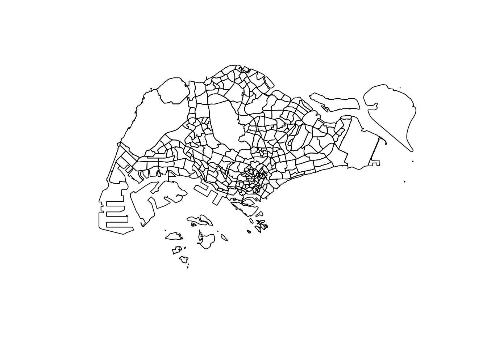
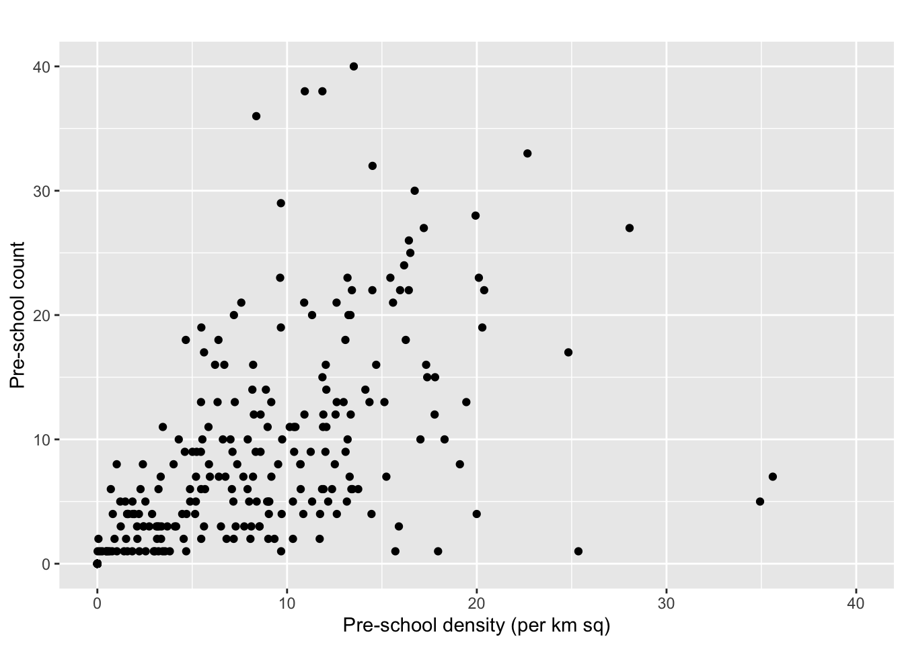

pacman::p_load(tidyverse,sf)Hands-on Exercise 1: Geospatial Data Science with R
welcome to my first hands-on exercise where i dabble with geospatial anlaytics & R programming for the first time! i got explore sf, tidyverse, pacman & ggplot2.
1.0 Overview
In this Hands-On Exercise, we will get a brief introduction to Geospatial Analytics with R programming! We will cover the following:
- Setting up packages & importing data into R
- Geo-processing with sf
- Data wrangling with dplyr
- Exploratory Data Analysis (EDA) with ggplot2
2.0 Setup
2.1 Setting Up Your File Directory
Let’s get our file directory organized for this project. Here’s what you need to do:
- Inside this IS415-GAA folder, create a new folder named Hands-on_Ex. Think of this as the main hub for all our hands-on exercises.
- Now, in the Hands-on_Ex folder, create another folder specifically for this week’s exercise. I’ve named mine Hands-on_Ex01 – it’s a good way to keep things orderly.
- Within the Hands-on_Ex01 folder, we’re going to need a place to store our data. Create a folder called data.
- Inside the data folder, make two subfolders: one named geospatial and the other aspatial. As their names suggest, we’ll use these to keep our geospatial and aspatial data files separate and organized. All the data we gather in the next section will go here.
- By setting up this structure, we’ll keep our project neat and navigable. It’ll make our life a whole lot easier as we dive into the exercises!
2.2 Data Sources
For our hands-on exercise, we’re going to dive into some geo-spatial analytics, and that means we need data first! Here’s where you’ll find the stuff we need:
- From data.gov.sg:
- From LTADataMall:
- From Inside Airbnb:
Now, once you‚Äôve got all these datasets, here‚Äôs what you do next: Download them and gather them into one organized place. Remember our data folder in Hands-on_Ex01? Inside, you‚Äôll see two subfolders named geospatial and aspatial. You‚Äôll want to put the geospatial datasets (like the cycling paths, pre-school locations, and subzone boundaries) into the geospatial folder. The aspatial dataset, like the listings.csv from the Airbnb data, should go into the aspatial folder. This setup will keep things super organized, making it easy for us to navigate and use the data efficiently. Let‚Äôs get to it! üåçüíªüìà
2.3 Installation of Packages
Let’s dive into some cool R packages we’re going to use in this exercise:
- sf: This one’s our go-to for dealing with geospatial data. Think of importing, managing, and processing all that map data.
- tidyverse: It’s like a Swiss Army knife for data science in R. We use it for importing, wrangling, and visualizing data. It’s not just one package, but a whole family of them! You’ve got readr for reading data, tidyr for tidying it up, dplyr for data manipulation & ggplot2 for creating awesome graphics.
- pacman: This is our package manager. It helps us load and manage other packages more smoothly. Think of it as a helpful assistant for your package needs.
Run the R code in the console in order to install tidyverse & sf
3.0 Importing Data into R
3.1 Importing Geospatial Data in R with st_read
When working with geospatial analytics, we often deal with shapefiles and other geographic data formats. To bring these files into our R environment, we use a function called st_read from the sf package. Here’s how it works:
3.11 Opening Shapefiles üåç
- The Basics: Shapefiles store geospatial data like maps of regions, roads, or points of interest. They’re pretty common in geographic data analysis.
- Using st_read: This function is our key to unlocking the data in shapefiles. You tell it where the file is and what layer of data you want to read.
3.12 How We Use It üóÇ
Here are some examples of st_read in action:
Reading Subzone Boundaries:
mpsz = st_read(dsn = "data/geospatial", layer = "MP14_SUBZONE_WEB_PL")Reading layer `MP14_SUBZONE_WEB_PL' from data source
`/Users/noviaantony/Desktop/noviaantony/IS415-GAA/Hands-on_Ex/Hands-on_Ex01/data/geospatial'
using driver `ESRI Shapefile'
Simple feature collection with 323 features and 15 fields
Geometry type: MULTIPOLYGON
Dimension: XY
Bounding box: xmin: 2667.538 ymin: 15748.72 xmax: 56396.44 ymax: 50256.33
Projected CRS: SVY21This line reads in data about subzone boundaries. It looks inside the data/geospatial directory for a layer named “MP14_SUBZONE_WEB_PL”.
Loading Cycling Paths:
cyclingpath = st_read(dsn = "data/geospatial", layer = "CyclingPathGazette")Reading layer `CyclingPathGazette' from data source
`/Users/noviaantony/Desktop/noviaantony/IS415-GAA/Hands-on_Ex/Hands-on_Ex01/data/geospatial'
using driver `ESRI Shapefile'
Simple feature collection with 2558 features and 2 fields
Geometry type: MULTILINESTRING
Dimension: XY
Bounding box: xmin: 11854.32 ymin: 28347.98 xmax: 42626.09 ymax: 48948.15
Projected CRS: SVY21Here, we’re grabbing data on cycling paths from the same directory but a different layer.
Getting Pre-School Locations (KML Format):
preschool = st_read("data/geospatial/PreSchoolsLocation.kml")Reading layer `PRESCHOOLS_LOCATION' from data source
`/Users/noviaantony/Desktop/noviaantony/IS415-GAA/Hands-on_Ex/Hands-on_Ex01/data/geospatial/PreSchoolsLocation.kml'
using driver `KML'
Simple feature collection with 2290 features and 2 fields
Geometry type: POINT
Dimension: XYZ
Bounding box: xmin: 103.6878 ymin: 1.247759 xmax: 103.9897 ymax: 1.462134
z_range: zmin: 0 zmax: 0
Geodetic CRS: WGS 84This time, we’re loading pre-school locations from a KML file, another type of geospatial data format.
3.13 What to Expect üìä
When you run st_read, you’ll see an output message in R. This tells you how many features (like points, lines, or shapes) are in the data, what type they are (like polygons or points), and the coordinate system they use. For example, with our subzone data (mpsz), it might say there are 323 features, all polygons, in a certain coordinate system.
3.2 Importing Aspatial Data in R
When it comes to aspatial data, like our Airbnb listings dataset, there’s an extra step in the import process. We’ll first pull it into R as a tibble data frame and then convert it into a simple feature data frame, which is super handy for geospatial analysis.
3.21 How to Import Aspatial Data
Since our Airbnb listings are in a CSV file, we’ll use the read_csv() function from the readr package. It looks like this:
listings <- read_csv("data/aspatial/listings.csv")Rows: 3457 Columns: 75
── Column specification ────────────────────────────────────────────────────────
Delimiter: ","
chr (25): listing_url, source, name, neighborhood_overview, picture_url, ho...
dbl (36): id, scrape_id, host_id, host_listings_count, host_total_listings_...
lgl (9): description, host_is_superhost, host_has_profile_pic, host_identi...
date (5): last_scraped, host_since, calendar_last_scraped, first_review, la...
ℹ Use `spec()` to retrieve the full column specification for this data.
ℹ Specify the column types or set `show_col_types = FALSE` to quiet this message.glimpse(listings) Rows: 3,457
Columns: 75
$ id <dbl> 71609, 71896, 71903, 2753…
$ listing_url <chr> "https://www.airbnb.com/r…
$ scrape_id <dbl> 2.023123e+13, 2.023123e+1…
$ last_scraped <date> 2023-12-27, 2023-12-26, …
$ source <chr> "previous scrape", "city …
$ name <chr> "Villa in Singapore · ★4.…
$ description <lgl> NA, NA, NA, NA, NA, NA, N…
$ neighborhood_overview <chr> NA, NA, "Quiet and view o…
$ picture_url <chr> "https://a0.muscache.com/…
$ host_id <dbl> 367042, 367042, 367042, 1…
$ host_url <chr> "https://www.airbnb.com/u…
$ host_name <chr> "Belinda", "Belinda", "Be…
$ host_since <date> 2011-01-29, 2011-01-29, …
$ host_location <chr> "Singapore", "Singapore",…
$ host_about <chr> "Hi My name is Belinda -H…
$ host_response_time <chr> "N/A", "N/A", "N/A", "wit…
$ host_response_rate <chr> "N/A", "N/A", "N/A", "100…
$ host_acceptance_rate <chr> "100%", "100%", "100%", "…
$ host_is_superhost <lgl> FALSE, FALSE, FALSE, FALS…
$ host_thumbnail_url <chr> "https://a0.muscache.com/…
$ host_picture_url <chr> "https://a0.muscache.com/…
$ host_neighbourhood <chr> "Tampines", "Tampines", "…
$ host_listings_count <dbl> 5, 5, 5, 51, 51, 5, 7, 51…
$ host_total_listings_count <dbl> 15, 15, 15, 68, 68, 15, 8…
$ host_verifications <chr> "['email', 'phone']", "['…
$ host_has_profile_pic <lgl> TRUE, TRUE, TRUE, TRUE, T…
$ host_identity_verified <lgl> TRUE, TRUE, TRUE, TRUE, T…
$ neighbourhood <chr> NA, NA, "Singapore, Singa…
$ neighbourhood_cleansed <chr> "Tampines", "Tampines", "…
$ neighbourhood_group_cleansed <chr> "East Region", "East Regi…
$ latitude <dbl> 1.34537, 1.34754, 1.34531…
$ longitude <dbl> 103.9589, 103.9596, 103.9…
$ property_type <chr> "Private room in villa", …
$ room_type <chr> "Private room", "Private …
$ accommodates <dbl> 3, 1, 2, 1, 1, 4, 2, 1, 1…
$ bathrooms <lgl> NA, NA, NA, NA, NA, NA, N…
$ bathrooms_text <chr> "1 private bath", "Shared…
$ bedrooms <lgl> NA, NA, NA, NA, NA, NA, N…
$ beds <dbl> 3, 1, 2, 1, 1, 5, 1, 1, 1…
$ amenities <chr> "[]", "[]", "[]", "[]", "…
$ price <chr> "$150.00", "$80.00", "$80…
$ minimum_nights <dbl> 92, 92, 92, 60, 60, 92, 9…
$ maximum_nights <dbl> 365, 365, 365, 999, 999, …
$ minimum_minimum_nights <dbl> 92, 92, 92, 60, 60, 92, 9…
$ maximum_minimum_nights <dbl> 92, 92, 92, 60, 60, 92, 9…
$ minimum_maximum_nights <dbl> 1125, 1125, 1125, 1125, 1…
$ maximum_maximum_nights <dbl> 1125, 1125, 1125, 1125, 1…
$ minimum_nights_avg_ntm <dbl> 92, 92, 92, 60, 60, 92, 9…
$ maximum_nights_avg_ntm <dbl> 1125, 1125, 1125, 1125, 1…
$ calendar_updated <lgl> NA, NA, NA, NA, NA, NA, N…
$ has_availability <lgl> TRUE, TRUE, TRUE, TRUE, T…
$ availability_30 <dbl> 30, 30, 30, 6, 6, 29, 30,…
$ availability_60 <dbl> 34, 60, 60, 6, 6, 33, 60,…
$ availability_90 <dbl> 55, 90, 90, 6, 6, 54, 90,…
$ availability_365 <dbl> 55, 91, 91, 183, 183, 54,…
$ calendar_last_scraped <date> 2023-12-27, 2023-12-26, …
$ number_of_reviews <dbl> 19, 24, 46, 20, 16, 12, 1…
$ number_of_reviews_ltm <dbl> 0, 0, 0, 0, 3, 0, 0, 1, 2…
$ number_of_reviews_l30d <dbl> 0, 0, 0, 0, 0, 0, 0, 0, 0…
$ first_review <date> 2011-12-19, 2011-07-30, …
$ last_review <date> 2020-01-17, 2019-10-13, …
$ review_scores_rating <dbl> 4.44, 4.16, 4.41, 4.40, 4…
$ review_scores_accuracy <dbl> 4.37, 4.22, 4.39, 4.16, 4…
$ review_scores_cleanliness <dbl> 4.00, 4.09, 4.52, 4.26, 4…
$ review_scores_checkin <dbl> 4.63, 4.43, 4.63, 4.47, 4…
$ review_scores_communication <dbl> 4.78, 4.43, 4.64, 4.42, 4…
$ review_scores_location <dbl> 4.26, 4.17, 4.50, 4.53, 4…
$ review_scores_value <dbl> 4.32, 4.04, 4.36, 4.63, 4…
$ license <chr> NA, NA, NA, "S0399", "S03…
$ instant_bookable <lgl> FALSE, FALSE, FALSE, TRUE…
$ calculated_host_listings_count <dbl> 5, 5, 5, 51, 51, 5, 7, 51…
$ calculated_host_listings_count_entire_homes <dbl> 0, 0, 0, 0, 0, 0, 1, 0, 0…
$ calculated_host_listings_count_private_rooms <dbl> 5, 5, 5, 51, 51, 5, 6, 51…
$ calculated_host_listings_count_shared_rooms <dbl> 0, 0, 0, 0, 0, 0, 0, 0, 0…
$ reviews_per_month <dbl> 0.13, 0.16, 0.30, 0.15, 0…3.22 Converting Aspatial Data to Geospatial Data
Now, let’s morph our listings data into a format that’s easier for geospatial analysis. We use the st_as_sf() function from the sf package for this:
listings_sf <- st_as_sf(listings,
coords = c("longitude", "latitude"),
crs=4326) %>%
st_transform(crs = 3414)What does this chunk of code do?
- It takes our listings tibble and converts it into a simple feature data frame.
- We specify which columns are our coordinates (longitude and latitude).
- We set the Coordinate Reference System (CRS) to 4326 (that’s the code for WGS84) and then transform it to 3414 (a common CRS for Singapore).
- After running this, you’ll notice:
- Our listings_sf now has a new column called geometry.
- longitude and latitude have been combined into this geometry column, which is perfect for mapping and spatial analysis!
4.0 Exploring the Contents of Our Data Frames
Now that we’ve got our data frames ready, let’s find out what’s inside them. We’ll use three easy methods to peek into our data frames and understand their structure and content.
4.1 Quick Peek with st_geometry()
Need just a basic overview of your geospatial data? st_geometry() is perfect for that:
st_geometry(mpsz)Geometry set for 323 features
Geometry type: MULTIPOLYGON
Dimension: XY
Bounding box: xmin: 2667.538 ymin: 15748.72 xmax: 56396.44 ymax: 50256.33
Projected CRS: SVY21
First 5 geometries:MULTIPOLYGON (((31495.56 30140.01, 31980.96 296...MULTIPOLYGON (((29092.28 30021.89, 29119.64 300...MULTIPOLYGON (((29932.33 29879.12, 29947.32 298...MULTIPOLYGON (((27131.28 30059.73, 27088.33 297...MULTIPOLYGON (((26451.03 30396.46, 26440.47 303...st_geometry gives us a snapshot of the essential features like the geometry type (e.g., MULTIPOLYGON), dimensions, bounding box, and the coordinate reference system (CRS). It’s a fast way to get the gist of our geospatial data.
4.2 A Deeper Look with glimpse()
For more detail, especially about the attributes of our data, glimpse() from the dplyr package comes in handy:
glimpse(mpsz)Rows: 323
Columns: 16
$ OBJECTID <int> 1, 2, 3, 4, 5, 6, 7, 8, 9, 10, 11, 12, 13, 14, 15, 16, 17, …
$ SUBZONE_NO <int> 1, 1, 3, 8, 3, 7, 9, 2, 13, 7, 12, 6, 1, 5, 1, 1, 3, 2, 2, …
$ SUBZONE_N <chr> "MARINA SOUTH", "PEARL'S HILL", "BOAT QUAY", "HENDERSON HIL…
$ SUBZONE_C <chr> "MSSZ01", "OTSZ01", "SRSZ03", "BMSZ08", "BMSZ03", "BMSZ07",…
$ CA_IND <chr> "Y", "Y", "Y", "N", "N", "N", "N", "Y", "N", "N", "N", "N",…
$ PLN_AREA_N <chr> "MARINA SOUTH", "OUTRAM", "SINGAPORE RIVER", "BUKIT MERAH",…
$ PLN_AREA_C <chr> "MS", "OT", "SR", "BM", "BM", "BM", "BM", "SR", "QT", "QT",…
$ REGION_N <chr> "CENTRAL REGION", "CENTRAL REGION", "CENTRAL REGION", "CENT…
$ REGION_C <chr> "CR", "CR", "CR", "CR", "CR", "CR", "CR", "CR", "CR", "CR",…
$ INC_CRC <chr> "5ED7EB253F99252E", "8C7149B9EB32EEFC", "C35FEFF02B13E0E5",…
$ FMEL_UPD_D <date> 2014-12-05, 2014-12-05, 2014-12-05, 2014-12-05, 2014-12-05…
$ X_ADDR <dbl> 31595.84, 28679.06, 29654.96, 26782.83, 26201.96, 25358.82,…
$ Y_ADDR <dbl> 29220.19, 29782.05, 29974.66, 29933.77, 30005.70, 29991.38,…
$ SHAPE_Leng <dbl> 5267.381, 3506.107, 1740.926, 3313.625, 2825.594, 4428.913,…
$ SHAPE_Area <dbl> 1630379.27, 559816.25, 160807.50, 595428.89, 387429.44, 103…
$ geometry <MULTIPOLYGON [m]> MULTIPOLYGON (((31495.56 30..., MULTIPOLYGON (…glimpse() shows us more, like the number of rows and columns and the data type for each field. It’s great for understanding the structure of our data frame beyond just the geospatial aspects.
This function gives us a snapshot of the essential features like the geometry type (e.g., MULTIPOLYGON), dimensions, bounding box, and the coordinate reference system (CRS). It’s a fast way to get the gist of our geospatial data.
4.3 Detailed View with head()
When you want to see actual data entries, head() is your go-to:
head(mpsz)Simple feature collection with 6 features and 15 fields
Geometry type: MULTIPOLYGON
Dimension: XY
Bounding box: xmin: 24468.89 ymin: 28369.47 xmax: 32362.39 ymax: 30542.74
Projected CRS: SVY21
OBJECTID SUBZONE_NO SUBZONE_N SUBZONE_C CA_IND PLN_AREA_N
1 1 1 MARINA SOUTH MSSZ01 Y MARINA SOUTH
2 2 1 PEARL'S HILL OTSZ01 Y OUTRAM
3 3 3 BOAT QUAY SRSZ03 Y SINGAPORE RIVER
4 4 8 HENDERSON HILL BMSZ08 N BUKIT MERAH
5 5 3 REDHILL BMSZ03 N BUKIT MERAH
6 6 7 ALEXANDRA HILL BMSZ07 N BUKIT MERAH
PLN_AREA_C REGION_N REGION_C INC_CRC FMEL_UPD_D X_ADDR
1 MS CENTRAL REGION CR 5ED7EB253F99252E 2014-12-05 31595.84
2 OT CENTRAL REGION CR 8C7149B9EB32EEFC 2014-12-05 28679.06
3 SR CENTRAL REGION CR C35FEFF02B13E0E5 2014-12-05 29654.96
4 BM CENTRAL REGION CR 3775D82C5DDBEFBD 2014-12-05 26782.83
5 BM CENTRAL REGION CR 85D9ABEF0A40678F 2014-12-05 26201.96
6 BM CENTRAL REGION CR 9D286521EF5E3B59 2014-12-05 25358.82
Y_ADDR SHAPE_Leng SHAPE_Area geometry
1 29220.19 5267.381 1630379.3 MULTIPOLYGON (((31495.56 30...
2 29782.05 3506.107 559816.2 MULTIPOLYGON (((29092.28 30...
3 29974.66 1740.926 160807.5 MULTIPOLYGON (((29932.33 29...
4 29933.77 3313.625 595428.9 MULTIPOLYGON (((27131.28 30...
5 30005.70 2825.594 387429.4 MULTIPOLYGON (((26451.03 30...
6 29991.38 4428.913 1030378.8 MULTIPOLYGON (((25899.7 297...This function displays the first few entries of our data frame, giving us a clear picture of what each record looks like, including the values in each field and the geometry data. It’s like a mini-preview of our dataset.
5.0 Plotting & Projection
5.1 Plotting Our Data
Visualization is key in geospatial analytics. While raw data frames are informative, they’re not exactly easy on the eyes. Let’s bring our data to life with some plotting:
Warning: plotting the first 9 out of 15 attributes; use max.plot = 15 to plot
all
This gives us a multi-plot of all attributes. For a focused view on a specific attribute, like planning area names, we use:

And if we just want to see the map outlines:

5.2 Working with Projections
Projections are crucial in geospatial analysis, helping us transform data into the appropriate coordinate system for our analysis.
5.2.1 Fixing Missing/Inaccurate Coordinate Systems
Sometimes our data might have missing or incorrect coordinate systems. Here’s how we handle that:
First, check the current CRS with st_crs():
Coordinate Reference System:
User input: SVY21
wkt:
PROJCRS["SVY21",
BASEGEOGCRS["SVY21[WGS84]",
DATUM["World Geodetic System 1984",
ELLIPSOID["WGS 84",6378137,298.257223563,
LENGTHUNIT["metre",1]],
ID["EPSG",6326]],
PRIMEM["Greenwich",0,
ANGLEUNIT["Degree",0.0174532925199433]]],
CONVERSION["unnamed",
METHOD["Transverse Mercator",
ID["EPSG",9807]],
PARAMETER["Latitude of natural origin",1.36666666666667,
ANGLEUNIT["Degree",0.0174532925199433],
ID["EPSG",8801]],
PARAMETER["Longitude of natural origin",103.833333333333,
ANGLEUNIT["Degree",0.0174532925199433],
ID["EPSG",8802]],
PARAMETER["Scale factor at natural origin",1,
SCALEUNIT["unity",1],
ID["EPSG",8805]],
PARAMETER["False easting",28001.642,
LENGTHUNIT["metre",1],
ID["EPSG",8806]],
PARAMETER["False northing",38744.572,
LENGTHUNIT["metre",1],
ID["EPSG",8807]]],
CS[Cartesian,2],
AXIS["(E)",east,
ORDER[1],
LENGTHUNIT["metre",1,
ID["EPSG",9001]]],
AXIS["(N)",north,
ORDER[2],
LENGTHUNIT["metre",1,
ID["EPSG",9001]]]]If it’s incorrect, assign the right EPSG code. For example, if mpsz is in SVY21 but with the wrong EPSG code, we fix it:
mpsz3414 <- st_set_crs(mpsz, 3414)Warning: st_crs<- : replacing crs does not reproject data; use st_transform for
thatst_crs(mpsz3414)Coordinate Reference System:
User input: EPSG:3414
wkt:
PROJCRS["SVY21 / Singapore TM",
BASEGEOGCRS["SVY21",
DATUM["SVY21",
ELLIPSOID["WGS 84",6378137,298.257223563,
LENGTHUNIT["metre",1]]],
PRIMEM["Greenwich",0,
ANGLEUNIT["degree",0.0174532925199433]],
ID["EPSG",4757]],
CONVERSION["Singapore Transverse Mercator",
METHOD["Transverse Mercator",
ID["EPSG",9807]],
PARAMETER["Latitude of natural origin",1.36666666666667,
ANGLEUNIT["degree",0.0174532925199433],
ID["EPSG",8801]],
PARAMETER["Longitude of natural origin",103.833333333333,
ANGLEUNIT["degree",0.0174532925199433],
ID["EPSG",8802]],
PARAMETER["Scale factor at natural origin",1,
SCALEUNIT["unity",1],
ID["EPSG",8805]],
PARAMETER["False easting",28001.642,
LENGTHUNIT["metre",1],
ID["EPSG",8806]],
PARAMETER["False northing",38744.572,
LENGTHUNIT["metre",1],
ID["EPSG",8807]]],
CS[Cartesian,2],
AXIS["northing (N)",north,
ORDER[1],
LENGTHUNIT["metre",1]],
AXIS["easting (E)",east,
ORDER[2],
LENGTHUNIT["metre",1]],
USAGE[
SCOPE["Cadastre, engineering survey, topographic mapping."],
AREA["Singapore - onshore and offshore."],
BBOX[1.13,103.59,1.47,104.07]],
ID["EPSG",3414]]Now, mpsz3414 has the correct SVY21 / Singapore TM coordinate system.
5.2.2 Dealing with Inappropriate Coordinate Systems
Remember our overview in section 3.0? Our datasets might have different coordinate systems. For instance, if preschool is in WGS84 but needs to be in SVY21 for accurate geoprocessing, we transform it:
preschool3414 <- st_transform(preschool, crs = 3414)
st_geometry(preschool3414)Geometry set for 2290 features
Geometry type: POINT
Dimension: XYZ
Bounding box: xmin: 11810.03 ymin: 25596.33 xmax: 45404.24 ymax: 49300.88
z_range: zmin: 0 zmax: 0
Projected CRS: SVY21 / Singapore TM
First 5 geometries:POINT Z (25089.46 31299.16 0)POINT Z (27189.07 32792.54 0)POINT Z (28844.56 36773.76 0)POINT Z (24821.92 46303.16 0)POINT Z (28637.82 35038.49 0)This changes preschool to the SVY21 projected coordinate system, making it compatible with our other data for analysis.
6.0 Geoprocessing with sf
6.1 Buffering
Buffering means adding space around a line, like the width of a path plus some extra room.
- Example with a 5 Meter Buffer: We add a 5-meter buffer around our cycling paths
buffer_cycling <- st_buffer(cyclingpath, dist=5, nQuadSegs = 30)- Calculating Buffer Area: Next, we find out how much space these buffers take up
buffer_cycling$AREA <- st_area(buffer_cycling)
sum(buffer_cycling$AREA)1774367 [m^2]6.2 Point-In-Polygon Count
Point in Polygon Count is about figuring out how many points are inside a certain area. For instance, counting how many preschools are in each zone. We use st_intersects, not st_intersection, for this task:
mpsz3414$`PreSch Count`<- lengths(st_intersects(mpsz3414, preschool3414))6.3 Summary Statistics
To get a quick overview of our data, like the number of preschools in each zone, we print summary stats:
summary(mpsz3414$`PreSch Count`) Min. 1st Qu. Median Mean 3rd Qu. Max.
0.00 0.00 4.00 7.09 10.00 72.00 6.4 Show Top Values with top_n
top_n helps us display the areas with the most preschools:
top_n(mpsz3414, 3, `PreSch Count`)Simple feature collection with 3 features and 16 fields
Geometry type: MULTIPOLYGON
Dimension: XY
Bounding box: xmin: 23449.05 ymin: 31880.27 xmax: 42940.57 ymax: 47996.47
Projected CRS: SVY21 / Singapore TM
OBJECTID SUBZONE_NO SUBZONE_N SUBZONE_C CA_IND PLN_AREA_N PLN_AREA_C
1 163 4 ALJUNIED GLSZ04 N GEYLANG GL
2 189 2 TAMPINES EAST TMSZ02 N TAMPINES TM
3 290 3 WOODLANDS EAST WDSZ03 N WOODLANDS WD
REGION_N REGION_C INC_CRC FMEL_UPD_D X_ADDR Y_ADDR
1 CENTRAL REGION CR 83AFAB768B6B2B66 2014-12-05 33592.58 32970.83
2 EAST REGION ER 21658EAAF84F4D8D 2014-12-05 41122.55 37392.39
3 NORTH REGION NR C90769E43EE6B0F2 2014-12-05 24506.64 46991.63
SHAPE_Leng SHAPE_Area geometry PreSch Count
1 7100.699 2959368 MULTIPOLYGON (((34449.13 33... 40
2 10180.624 4339824 MULTIPOLYGON (((42196.76 38... 72
3 6603.608 2553464 MULTIPOLYGON (((24786.75 46... 546.5 Calculating Density with mutate
Finally, we calculate the preschool density in each subzone:
- First, we find the area of each subzone.
- Then, we use mutate to create a new field, PreSch Density, by dividing the preschool count by the area.
mpsz3414$Area <- mpsz3414 %>%
st_area()
mpsz3414 <- mpsz3414 %>%
mutate(`PreSch Density` = `PreSch Count`/Area * 1000000)7.0 Exploratory Data Analysis (EDA)
In this EDA section, we’ll explore various ggplot2 functions to create informative and accurate statistical graphs for better data visualization and understanding.
7.1 EDA Histograms of Pre-school Density
We’ll start with a basic histogram using hist() to examine the distribution of PreSch Density:
hist(mpsz3414$`PreSch Density`)
Though this histogram is informative, it’s quite basic. For more polished reporting, we’ll customize it using ggplot2:
ggplot(data=mpsz3414, aes(x= as.numeric(`PreSch Density`))) +
geom_histogram(bins=20, color="black", fill="light blue") +
labs(title = "Are pre-schools evenly distributed in Singapore?",
subtitle= "A significant number of planning sub-zones have only one pre-school, while a few have over 20",
x = "Pre-school density (per km sq)",
y = "Frequency")7.2 DIY Challenge: Creating a Scatterplot using ggplot2
Create a scatterplot using ggplot2 to show the relationship between Pre-school Density and Count. We’ve already prepared the necessary variables. Use geom_point for the scatterplot and customize the appearance:
ggplot(data=mpsz3414,
aes(y = `PreSch Count`,
x= as.numeric(`PreSch Density`))) +
geom_point(color="black",
fill="light blue") +
xlim(0, 40) +
ylim(0, 40) +
labs(title = "",
x = "Pre-school density (per km sq)",
y = "Pre-school count")Warning: Removed 2 rows containing missing values (`geom_point()`).
8.0 Final Reflections
It’s been a rewarding experience, delving into the intricacies of spatial data and understanding how to manipulate and visualize it effectively. The hands-on work with tools like sf and ggplot2 has been particularly enlightening, helping me to see data in a more dimensional and contextual way.It’s fascinating how transforming data into different projections or creating simple buffers can reveal entirely new perspectives.
That’s a wrap on this week’s exercise! I’m excited to dive deeper into geospatial analytics. We’re only just beginning, and there’s a ton more out there for us to discover and play around with!